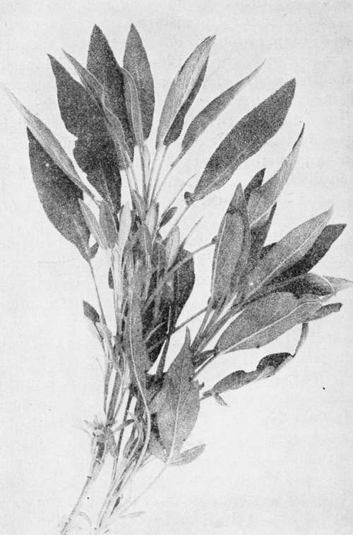
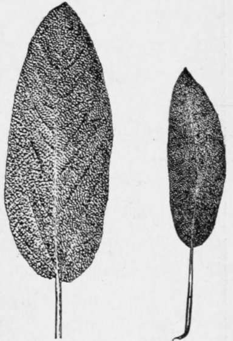

Sage
Description
This section is from the book "Culinary Herbs", by M. G. Kains. Also available from Amazon: Culinary Herbs, Their Cultivation, Harvesting, Curing and Uses.
Sage
Sage (Salvia officinalis, Linn.), a perennial member of the Labiatae, found naturally on dry, calcareous hills in southern Europe, and northern Africa. In ancient times, it was one of the most highly esteemed of all plants because of its reputed health-insuring properties. An old adage reads, "How can a man die in whose garden sage is growing?" Its very names betoken the high regard in which it was held; salvia is derived from salvus, to be safe, or salveo, to be in good health or to heal; (hence also salvation!) and officinalis stamps its authority or indicates its recognized official standing. The name sage, meaning wisdom, appears to have had a different origin, but as the plant was reputed to strengthen the memory, there seems to be ground for believing that those who ate the plant would be wise.
Description
The almost woody stems rise usually 15 to 18 inches high, though in Holt's Mammoth double these sizes is not uncommon. The leaves are oblong, pale green, finely toothed, lance-shaped, wrinkled and rough. The usually bluish-lilac, sometimes pink or white flowers, borne in the axils of the upper leaves in whorls of three or four, form loose terminal spikes or clusters. Over 7,000 of the small globular, almost black seeds, which retain their vitality about three years, are required to weigh an ounce, and nearly 20 ounces to the quart.
Cultivation
Sage does best upon mellow welldrained soil of moderate fertility. For cultivation on a large scale the soil should be plowed deeply and allowed to remain in the rough furrows during the winter, to be broken up as much as possible by the frost. In the spring it should be fined for the crop. Sage is easily propagated by division, layers and cuttings, but these ways are practiced on an extensive scale only with the Holt's Mammoth variety, which produces no seed. For other varieties seed is most popular. This is sown in drills at the rate of two seeds to the inch and covered about 1/4 inch deep. At this rate and in rows 15 inches apart about 8 pounds of seed will be needed to the acre.
Sage, the Leading Herb for Duck and Goose Dressing
Usually market gardeners prefer to grow sage as a second crop. They therefore raise the plants in nursery beds. The seed is sown in very early spring, not thicker than already mentioned, but in rows closer together, 6 to 9 inches usually. From the start the seedlings are kept clean cultivated and encouraged to grow stocky. By late May or early June the first sowings of summer vegetables will have been marketed and the ground ready for the sage. The ground is then put in good condition and the sage seedlings transplanted 6 or 8 inches apart usually. Clean cultivation is maintained until the sage has possession.
When the plants meet, usually during late August, the alternate ones are cut, bunched and sold. At this time one plant should make a good bunch. When the rows meet in mid-September, the alternate rows are marketed, a plant then making about two bunches. By the middle of October the final cutting may be started, when the remaining plants should be large enough to make about three bunches each. This last cutting may continue well into November without serious loss of lower leaves. If the plants are not thinned, but are allowed to crowd, the lower leaves will turn yellow and drop off, thus entailing loss.
For cultivation with hand-wheel hoes the plants in the rows should not stand closer than 2 inches at first. As soon as they touch, each second one should be removed and this process repeated till, when growing in a commercial way, each alternate row has been removed. Finally, the plants should be 12 to 15 inches apart. For cultivation by horse the rows will need to be farther apart than already noted; 18 to 24 inches is the usual range of distances. When grown on a large scale, sage usually follows field-grown lettuce, early peas or early cabbage. If not cut too closely or too late in the season sage plants stand a fair chance to survive moderate winters. The specimens which succeed in doing so may be divided and transplanted to new soil with little trouble. This is the common practice in home gardens, and is usually more satisfactory than growing a new lot of plants from seed each spring.
For drying or for decocting the leaves are cut when the flowers appear. They are dried in the shade. If a second cutting is to be made, and if it is desired that the plants shall live over winter, this second cutting must not be made later than September in the North, because the new stems will not have time to mature before frost, and the plants will probably winterkill.
Sage seed is produced in open cups on slender branches, which grow well above the leaves. It turns black when ripe. The stems which bear it should be cut during a dry afternoon as soon as the seeds are ripe and placed on sheets to cure; and several cuttings are necessary, because the seed ripens unevenly. When any one lot of stems on a sheet is dry a light flail or a rod will serve to beat the seed loose. Then small sieves and a gentle breeze will separate the seed from the trash. After screening the seed should be spread on a sheet in a warm, airy place for a week or so to dry still more before being stored in cloth sacks. A fair yield of leaves may be secured after seed has been gathered.
Uses
Because of their highly aromatic odor sage leaves have long been used for seasoning dressings, especially to disguise the too great lusciousness of strong meats, such as pork, goose and duck. It is one of the most important flavoring ingredients in certain kinds of sausage and cheese. In France the whole herb is used to distill with water in order to secure essential oil of sage, a greenish-yellow liquid employed in perfumery. About 300 pounds of the stems and leaves yield one pound of oil.
Samphire (Crithmum maritimum, Linn.), a European perennial of the Umbelliferae, common along rocky sea coasts and cliffs beyond the reach of the tide. From its creeping rootstocks short, sturdy, more or less widely branched stems arise. These bear two or three thick, fleshy segmented leaves and umbels of small whitish flowers, followed by yellow, elliptical, convex, ribbed, very light seeds, which rarely retain their germinating power more than a year. In gardens the seed is therefore generally sown in the autumn as soon as mature in fairly rich, light, well-drained loam. The seedlings should be protected with a mulch of straw, leaves or other material during winter. After the removal of the mulch in the spring no special care is needed in cultivation. The young, tender, aromatic and saline leaves and shoots are pickled in vinegar, either alone or with other vegetables.
Relative Sizes of Holt's Mammoth and Common Sage Leaves
Continue to:
- prev: Rue
- Table of Contents
- next: Savory, Summer